BothWise
Your folders, the same everywhere
Tutorials
How to do it, step by step: one card for each thing
App version {{VERSIONE}} · updated on {{DATA}}
The first time, on each phone or tablet (Android 10 or later).
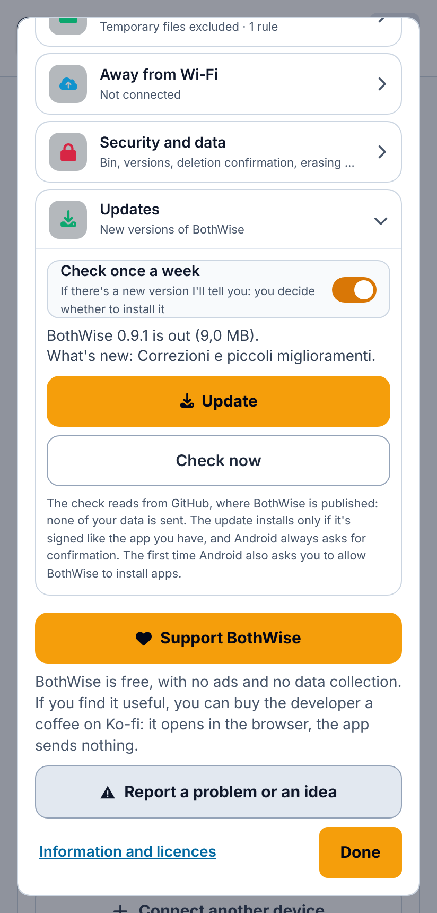
When a new version is out (BothWise checks by itself once a week).
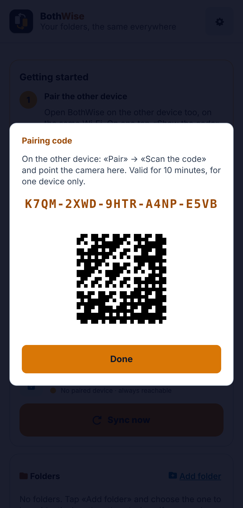
Needed once for each pair. Both on the same Wi‑Fi, with BothWise open.
You already have two paired devices.
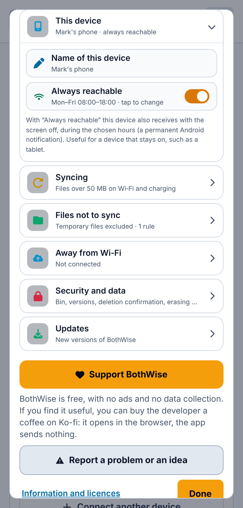
For a tablet or phone left on, which must receive even with the screen off.
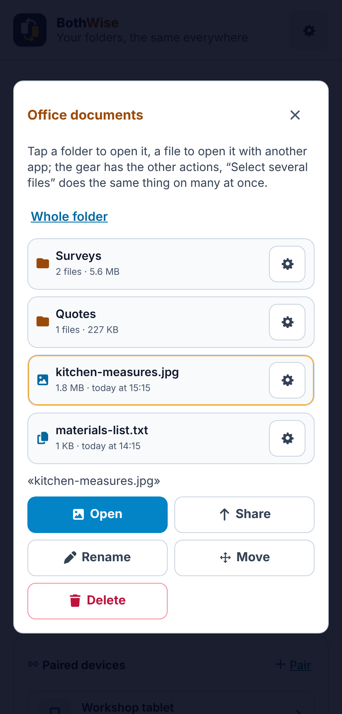
You want to see what's inside without opening another app.
From the list of a folder's files.
To put files into the synced folder.
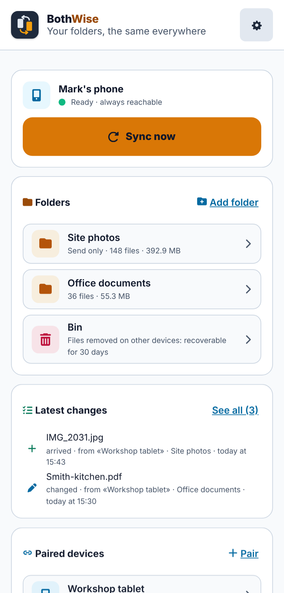
Choose the folder to keep identical on the other devices.
Another device offers you a folder.
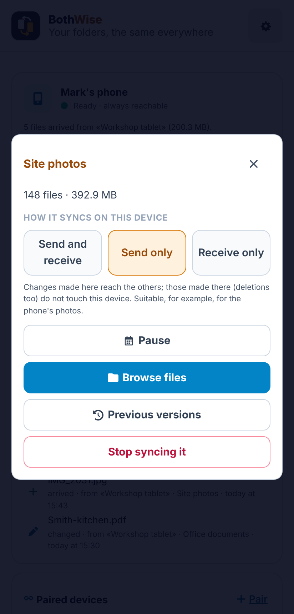
To decide which way files travel.
To copy the photos you take to the tablet.

To stop a folder or a device for a while.
The files stay where they are.
To use less battery or not slow down Wi‑Fi during working hours.
When you send large files and don't want to clog your home Wi‑Fi.
It's usually automatic; this forces a round.
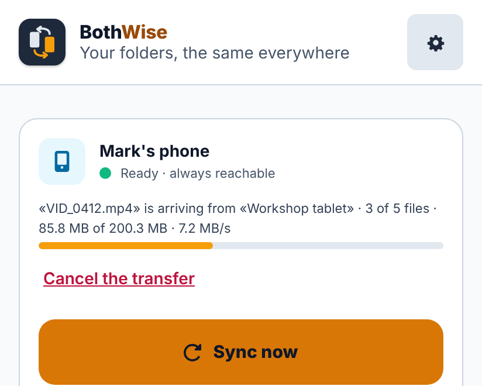
A large file is using the network.
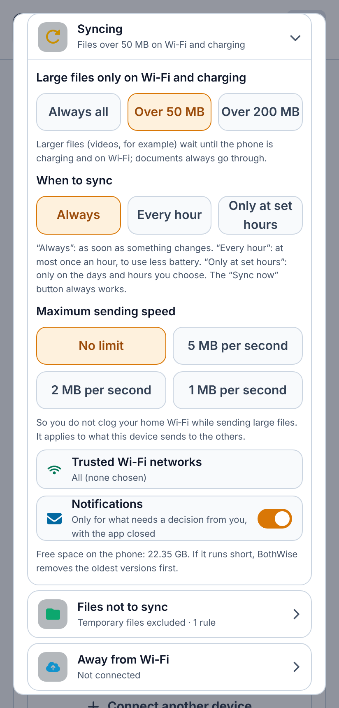
«N files are waiting» appears on the Home.
So you don't sync on guest Wi‑Fi.
From Gallery, Files, WhatsApp…
The same file was changed on two devices at once: both are kept.

A file disappeared because another device removed it.
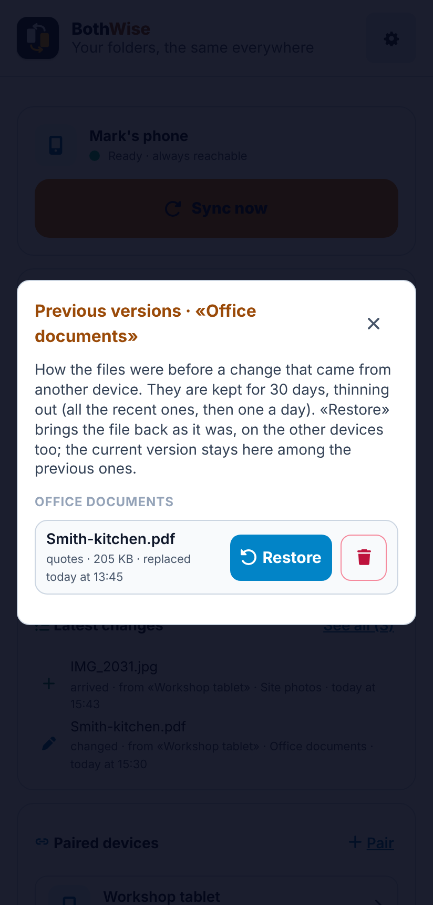
A file was changed elsewhere and you want it as it was.

To decide yourself what to remove.
A box appears on the Home.
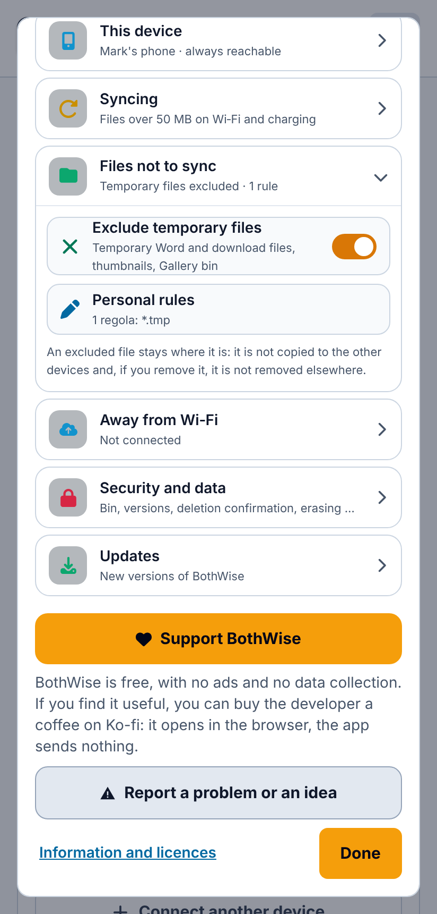
To leave out videos, temporary files, etc.

One of your devices wants to send you a file and BothWise is closed.
To receive and send files with one tap from any screen.
A file needed once, not a folder to keep identical.
Phone stolen, lost or sold.
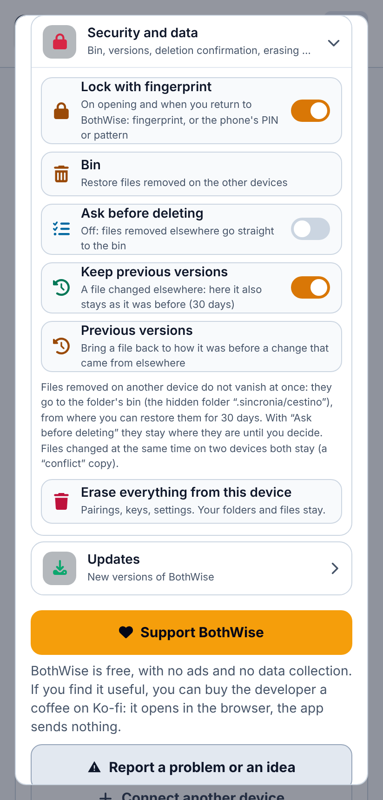
To protect the app.
Before selling it or giving it away.
The app follows the phone's language; you can choose it yourself.
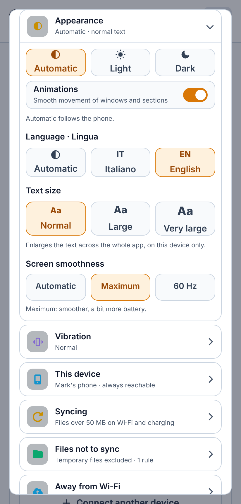
To adapt the app.
To write to us.
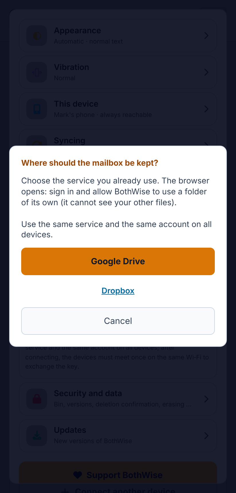
When devices aren't on the same Wi‑Fi (home and site, office and travel).
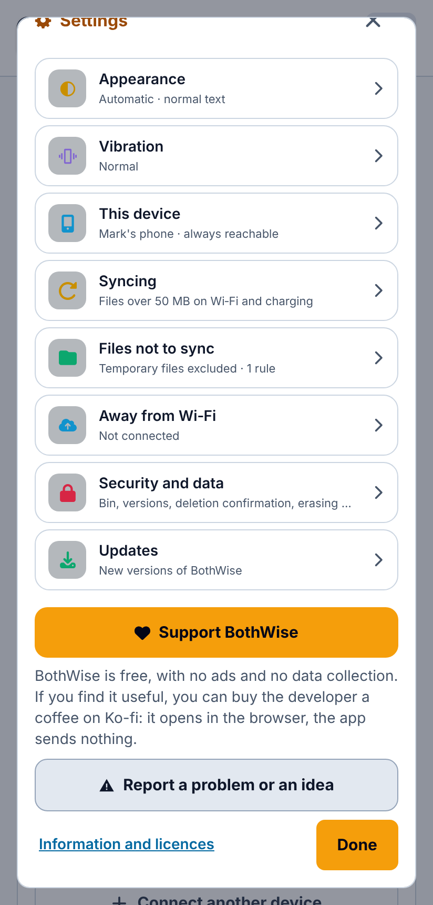
If you find the app useful.